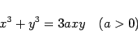
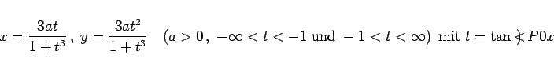
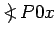
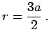
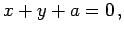
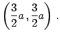
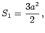

Die Gleichung
|  | (2.216a) |
oder in Parameterform
|  | (2.216b) |
ergibt graphisch dargestellt das kartesische Blatt. Dabei wird mit P der Kurvenpunkt bezeichnet, der zum Parameterwert t gehört, und mit  der Winkel, den die positive x-Achse mit P bildet.
Der Koordinatenursprung ist infolge zweier ihn durchlaufender Kurvenzweige ein Doppelpunkt, in dem beide Koordinatenachsen Tangenten sind. Der Krümmungsradius ist für beide Kurvenzweige im Koordinatenursprung  Die Asymptote berechnet sich aus  der Scheitelpunkt A hat die Koordinaten 
Der Flächeninhalt der Schleife ist  der Flächeninhalt S2 zwischen der Kurve und der Asymptote hat den gleichen Wert.